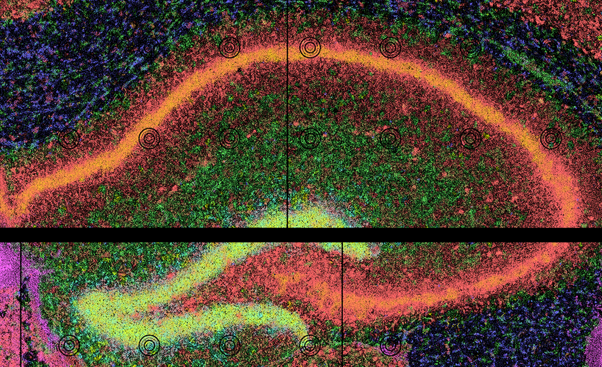

Quick Start: Run with Docker¶
This quick start runs run_together inside the prebuilt Docker image, which contains CartLoader, every tool it calls, and a small starter dataset.
Use Cases
The fastest way to try CartLoader: nothing to install except Docker, and the first example needs no download.
Requirements
Dockeron your system (see Install Docker).- For the second example: about 10 GB of free disk (a 1.5 GB download plus about 8 GB of outputs); it took about 11 minutes on a 12-core laptop with
--threads 4 -j 4.
Install Docker¶
If you are new to Docker, see the Docker documentation for installation and basic usage. Then check that it works:
1 2 | |
If these commands fail, install Docker first.
Get the Image¶
1 | |
latest always points to the most recent release. For reproducible results, use a dated tag instead (for example hyunminkang/cartloader:20261007-1432); every release is listed on Docker Hub.
How the image is used: its entry point is the cartloader command, so whatever follows the image name is a cartloader subcommand and its options:
1 | |
-vmounts a directory from your machine into the container. Paths in the options must be the container paths.--rmremoves the container when the command finishes; outputs written to a mounted directory stay on your machine.- To look around inside the image (the repository is at
/app/cartloader, the starter data at/app/data):1docker run --rm -it --entrypoint bash hyunminkang/cartloader:latest
File ownership on Linux
The container runs as root, so on Linux the files it writes are owned by root. Change ownership afterwards if needed, e.g. sudo chown -R $(id -u):$(id -g) out.
Example 1: Mouse Hippocampus (preloaded, no download)¶
Input¶
The image contains a mouse hippocampus SGE from Seq-Scope under /app/data/sge/, already converted to the FICTURE-compatible transcript format by sge_convert:
transcripts.unsorted.tsv.gz: transcript-indexed SGE in TSV
1 2 3 4 | |
X: X coordinates in umY: Y coordinates in umgene: gene symbolscount: expression count per pixel per gene
feature.clean.tsv.gz: UMI counts on a per-gene basis in TSV
1 2 3 4 | |
gene: gene symbols
* gene_id: gene IDs
* count: expression count per gene
coordinate_minmax.tsv: X Y min/max coordinates
1 2 3 4 | |
xminxmax: min and max X coordinates in umyminymax: min and max Y coordinates in um
The same data is on Zenodo: seqscope_starter.std.tar.gz.
Run¶
1 2 3 4 5 6 7 8 9 10 | |
| Option | Meaning |
|---|---|
--platform seqscope |
Use the Seq-Scope platform profile for defaults. |
--in-transcript |
An already-converted transcript TSV, so the SGE conversion step is skipped. |
--out-dir, --id |
Output directory and the sample ID used to name the packaged assets. |
--width, --n-factor |
FICTURE hexagon width (µm) and the number(s) of factors; one model per combination. |
--threads, -j |
Threads per job and number of parallel jobs. |
Output¶
The deployable result is out/seqscope_hippo/cartl/seqscope_hippo/: a catalog.yaml plus the PMTiles it references (the SGE and one set of factor layers per model). See Outputs for the full layout.
-

View/Explore¶
A packaged version of this dataset is available in CartoScope and on Zenodo.
Example 2: Xenium Human Kidney (full pipeline)¶
This example starts from raw Xenium output, so every stage runs: SGE conversion, FICTURE, two cell analyses (CartLoader's own, from the Xenium cell boundaries, and an import of the Xenium Ranger clusters), the DAPI image, and packaging.
Input¶
A human kidney section from GSE264334, repackaged in the standard Xenium output layout and hosted on the AWS Open Data Registry (no AWS account needed):
1 2 3 4 5 6 7 | |
run_together finds the inputs inside the folder by their standard Xenium names: transcripts.csv.gz, cells.csv.gz, cell_boundaries.csv.gz, analysis/clustering/gene_expression_graphclust/clusters.csv, and morphology.ome.tif (see the Xenium platform page).
Run¶
1 2 3 4 5 6 7 8 | |
Without --width/--n-factor, the Xenium profile's defaults apply (12 µm hexagons; 12, 24, and 48 factors). --bin-count 50 groups genes into 50 bins for the point layers instead of the default 500, which makes packaging faster for a quick test.
Outputs¶
run_together writes everything under --out-dir:
1 2 3 4 5 6 7 | |
Upload cartl/<id>/ to any web-accessible storage to view it in CartoScope, or let run_together do it with --s3-upload (see Publishing).
Interrupted or failed run?
Rerun the same command: finished steps are skipped. Add --restart to rebuild everything. See Resume or Restart.
Next Steps¶
- Run your own data: platform tutorials and Specifying Inputs.
- Analyze several samples jointly: Multiple Samples with run_together.
- Run the stages one at a time: Step-by-step.